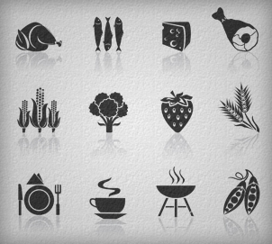
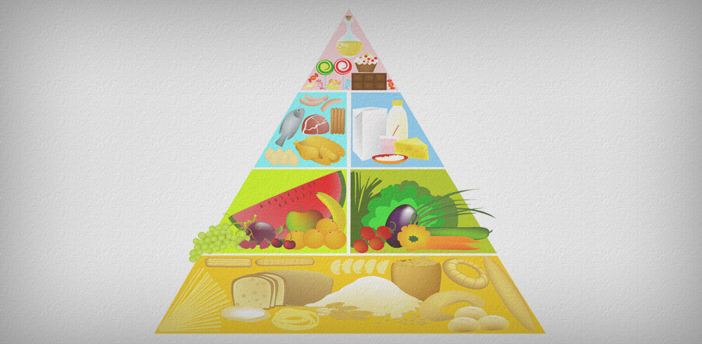
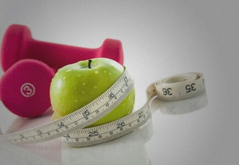
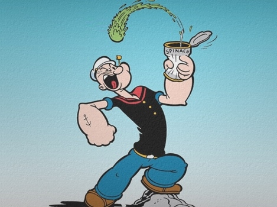

Урок 2. Правильное питание
Правильным питанием как одним из самых важных элементов здорового образа жизни с каждым днем интересуются все больше людей. На нашем сайте есть даже отдельный курс по правильному питанию. Пища это то, без чего невозможна жизнедеятельность любого человека, а здоровье напрямую зависит от рациона питания. Некачественная или вредная еда способна нанести ущерб организму, поэтому очень важно уметь составлять правильную программу питания на каждый день. Здоровая пища не всегда эталон вкуса, но с позиции пользы ей нет аналогов.
Правильное и здоровое питание в наши дни уже не показатель аристократичности, а ответ на темп и условия жизни. Все больше людей сегодня занимаются спортом, который неотделим от здорового питания. Выбор рациона и составление меню на день, неделю, месяц становится насущной задачей для всех, кто задается вопросами похудения, снижения веса или роста мышц, улучшения самочувствия в целом. В данном уроке мы расскажем об основных принципах правильного питания.
Просьба отнестись к этим советам критически, так как в правильном питании нет строгих законов, а есть рекомендации, которые могут поддерживаться одними специалистами и критиковаться другими.
Оглавление:
- Что такое правильное питание?
- Пищевая пирамида
- Варианты дневного рациона
- Здоровое питание и похудение
- Расчёт TDEE
- Правильное питание для роста мышц
- Питьевой режим
- Полезная информация
- Проверочный тест
Что такое правильное питание?
В источниках редко можно встретить четкое и конкретное определение понятия здорового и правильного питания. Наиболее полная формулировка этого термина выглядит следующим образом:
Правильное питание (или здоровое питание) – это сбалансированный рацион из натуральных и качественных продуктов, которые удовлетворяют все нужды организма, кроме того, идут ему на пользу.
Одним из известных авторов книг о правильном питании является американский натуропат, приверженец нетрадиционной медицины, вегетарианец Герберт Шелтон (1895-1985). Его идея о пользе натуральной еды стала прогрессивной: Шелтон полагал, что природа позаботилась о нуждах человека в пище в полной мере, а значит, нашему организму необходимы только натуральные продукты.
Шелтон также развивал диетологическую концепцию раздельного питания в книге «Правильное сочетание пищевых продуктов». Идея данной диеты в несовместимости некоторых пищевых продуктов при их одновременном употреблении. Например, автор утверждал, что нельзя комбинировать еду, богатую белками, с углеводосодержащими продуктами, сочетать молоко с другой пищей, а жиры с белками. Раздельное питание заинтересовало не только желающих вести здоровый образ жизни, но и специалистов в области диетологии и физиологии. Были проведены клинические исследования, в результате которых удалось установить, что полезно не столько раздельное питание, сколько употребление здоровой еды, так как на похудение и хорошее состояние организма влияет не принцип разделения пищи, а общее снижение ее калорийности.
Также актуальными для правильного питания являются постулаты, изложенные в одной из самых популярных современных книг о здоровой пище «Китайское исследование». Это произведение написано известным специалистом Колином Кэмпбеллом, почетным профессором кафедры пищевой биохимии Корнелльского университета, обладателем премии Национального института здоровья США. Вот некоторые выводы из этой книги:
- пищевые витаминные добавки никогда не заменят натуральные продукты, содержащие тот же набор витаминов;
- практически все питательные вещества лучше усваиваются из растительной пищи, чем из пищи животного происхождения;
- правильное питание помогает контролировать влияние негативных внешних факторов на организм;
- правильно составленная диета никогда не принесет вреда организму.
Обобщив информацию из этих произведений, можно выделить несколько рекомендаций о том, что нужно знать о правильном питании и здоровой еде:
Правило 1. Еда – это в первую очередь основа для жизнедеятельности, «топливо» для организма, из которого вырабатывается энергия, и только потом – ритуал и удовольствие.
Правило 2. Здоровое питание убережет ваш организм от преждевременного старения, поможет избежать многих заболеваний сердечнососудистой системы, некоторых видов рака, болезней пищеварительного тракта, диабета, гипертонии. Кроме того, есть определенный перечень продуктов, которые способствуют улучшению умственной деятельности, о них читайте в данной статье.
Правило 3. В здоровом питании компромиссам не место. От газировки, чипсов, майонеза и других вредных продуктов нужно отказаться. Употреблять сладкое можно и даже нужно, но не постоянно и не все подряд.
Правило 4. Запеченная, тушеная и вареная еда полезнее, чем жареная и копченая.
Правило 5. Доверяй, но проверяй. С развитием Интернета в сети появилось огромное количество различных блогов и сайтов, содержащих информацию о здоровом питании и дающих рекомендации по улучшению фигуры. Однако не стоит забывать, что авторами блогов не всегда становятся профессионалы, действительно знающие свое дело. Именно поэтому прежде чем начать применять ту или иную методику на себе, следует максимально подробно ознакомиться с отзывами других пользователей, почитать дополнительную информацию об авторе теории и проанализировать достигнутые им результаты. Этот простой совет поможет вам отсеять непроверенные теории и тем самым избежать риска нанести непоправимый вред своему здоровью, доверившись непрофессионалам.
Пищевая пирамида
Итак, основой здорового образа жизни является правильное питание, которое зависит от потребляемой нами пищи. По содержанию различных питательных элементов и витаминов, все продукты можно разделить на группы, которые позволят составить оптимальный рацион в течение дня.
Опираясь на принципы правильного питания, специалисты Гарвардской школы общественного здоровья под руководством американского диетолога Уолтера Виллетта разработали универсальную схему питания человека в течение дня пищевую пирамиду. Продукты, расположенные в нижней части пирамиды, рекомендуется употреблять в пищу как можно чаще, а продукты из верхней части следует употреблять в ограниченных количествах или вовсе исключить из своего рациона. Кроме того, стоит отметить, что в основании данной пирамиды также лежат физическая активность и достаточное потребление жидкостей, предпочтительнее минеральной воды.

Вот строение пирамиды с перечнем необходимых продуктов и их свойств снизу вверх:
Хлеб из цельных злаков, овсяные хлопья, рис и макаронные изделия
Это основа здорового питания. Эти продукты обеспечивают организм сложными углеводами, важным источником энергии. Цельнозерновая пища богата витаминами группы В, минералами и клетчаткой, необходимыми каждому человеку. Вопреки распространенному мнению, эти продукты не приводят к набору веса, если не добавлять к ним сливочное масло, сыр или соусы.
Овощи
Овощи обеспечивают нас витаминами, являются отличным источником белка, кроме того, они не богаты жирами. Максимальное количество питательных веществ содержится в овощах насыщенного зеленого, желтого и оранжевого цвета, а также в крахмалистых овощах – картофеле и ямсе. Овощные соки тоже очень полезны для организма.
Фрукты
Фрукты – богатый источник витаминов, в первую очередь витамина С. Это низкокалорийные продукты, практически не содержащие жиров. Фрукты полезны в любом виде: свежем, замороженном, консервированном, сушеном, а также в виде сока, за исключением сильно подслащенных нектаров и сиропов на фруктовой основе.
Мясо, птица, рыба, сухие бобы, яйца и орехи
Животные продукты являются отличным источником белка, железа, цинка и витаминов группы В, так же как фасоль, орехи и семена. Тофу (соевый творог), а также белая фасоль богаты необходимым организму кальцием. Миндаль является хорошим источником витамина Е.
Молоко, кефир, сыр, йогурт
Молочные продукты незаменимые источники кальция. Они также обеспечивают организм белками и витамином B12. Для употребления в пищу следует выбирать нежирные сорта молочных продуктов, поскольку в них содержится минимум холестерина, насыщенных жиров и, конечно же, калорий.
Жиры, масла и сладости
Эти продукты высококалорийны и очень питательны. Ими не следует злоупотреблять, но и полностью отказываться не стоит. В рационе обязательно должны присутствовать растительные масла, которые являются богатым источником витамина Е (организму достаточно 1 столовой ложки в день). Продукты, содержащие патоку, могут быть полезны как источник железа.
Варианты дневного рациона в соответствии с пищевой пирамидой
Из названных групп продуктов можно приготовить множество различных блюд. Примерное дневное меню среднестатистического человека может выглядеть следующим образом:
Вариант 1
- Завтрак: небольшой кусочек мяса, порция риса и 200 г салата, чашка чая с лимоном, небольшой фрукт.
- Перекус: несладкий фрукт.
- Обед: два хлебных тоста с постной рыбой, зеленый салат без заправки, минеральная вода с лимоном.
- Перекус: кефир или йогурт.
- Ужин: тушеные овощи с тостом, стакан воды с лимоном.
Вариант 2
- Завтрак: куриная грудка, посыпанная пармезаном, отварной картофель с зеленой фасолью, чашка чая с лимоном, небольшой фрукт.
- Перекус: горсть орехов.
- Обед: порция бурого риса с тушеными овощами, стакан мятного чая, небольшой фрукт.
- Перекус: кефир или йогурт.
- Ужин: 150 г обезжиренного творога, маленький фрукт, стакан воды.
Стоит отметить, что такой рацион обеспечивает потребности среднего человека в пище. Для тех, кто хочет похудеть или набрать мышечную массу меню должно быть скорректировано в соответствии с индивидуальными особенностями организма и поставленной целью.
Здоровое питание и похудение
Желание похудеть заставляет многих людей обратиться к правильному питанию, поскольку основной причиной ожирения является употребление нездоровой еды, фаст-фуда и большого количества сладкого. Путь к красивому здоровому телу лежит через построение правильного рациона и режима питания.
В поисках оптимальной для себя программы похудения не стоит сразу отправляться в Интернет и изучать «революционные методики», позволяющие похудеть без малейших усилий и пищевых ограничений. Следует с осторожностью относиться ко всем предлагаемым в сети методикам, поскольку довольно часто они составлены людьми, не имеющими профессионального образования в сфере диетологии, и не могут гарантировать положительный результат. Если у вас есть возможность, обязательно запишитесь на прием к специалисту-диетологу, который проведет индивидуальное исследование особенностей вашего организма, а по его результатам предложит подходящую именно вам программу питания в соответствии с вашими целями. Если консультация профессионального диетолога по каким-либо причинам для вас недоступна, можно воспользоваться советами специалистов, ведущих сайты, форумы и блоги по вопросам похудения, почитать книги данной тематики, не забывая при этом проверять предложенную вам информацию, подробно знакомиться с отзывами и рекомендациями людей, испытавших данную методику на собственном опыте.
Любой диетолог с уверенностью скажет вам, что похудеть можно, уменьшив количество калорий, потребляемых человеком в сутки. Минимальным количеством единиц энергии, необходимым организму взрослого человека ежедневно, считается 1200 ккал. Рассчитать количество калорий необходимых для поддержания веса на текущем уровне можно, определив свой суммарный суточный расход энергии или, как его называют, TDEE (Total Daily Energy Expenditure). Он рассчитывается из показателя уровня базального метаболизма – количества калорий, необходимых для поддержания жизнедеятельности в спокойном состоянии (BMR), умноженного на фактор активности.
Формула расчета базального метаболизма, основанная на весе, росте и возрасте человека, выводится следующим образом:
Мужчины: 66 + (13,7 X вес тела) + (5 X рост в см) (6,8 X возраст в годах) уровень основного метаболизма.
Женщины: 655 + (9,6 X вес тела) + (1,8 X рост в см) (4,7 X возраст в годах) уровень основного метаболизма.
Полученный результат нужно умножить на фактор активности, который равен:
- 1,2 сидячий образ жизни;
- 1,375 средняя активность (легкие упражнения 1-3 в неделю);
- 1,55 высокая активность (интенсивные занятия 3-5 раз в неделю);
- 1,725 очень высокая активность (тяжелые физические нагрузки 6-7 раз в неделю);
- 1,9 экстремальная активность (очень тяжелая физическая работа, либо занятия интенсивным тренингом 2 раза в день).
Узнать, сколько килокалорий в день нужно именно вам, вы можете в форме ниже:
После того как вы определите, какое количество калорий в день нужно для поддержания существующего веса, легко можно посчитать сколько калорий нужно и для похудения. Без вреда для организма можно уменьшить суточное потребление калорий на 10-15% от требуемого для компенсации расхода энергии.
Что нужно знать, собираясь похудеть?
1. Важно понимать, что диета для похудения без занятий спортом быстрого результата не принесет. Ускорить процесс, предварительно выведя формулу количества калорий с учетом физических нагрузок, разумеется, и, рассчитав дневной рацион от нее, можно только занимаясь специальными упражнениями. О них вы узнаете в следующем уроке.
2. Подбирая диету, лучше всего проконсультироваться с врачом-специалистом или, по крайней мере, остановить свой выбор на известной программе, эффективность которой уже проверялась другими людьми.
3. Если вы стали плохо спать или чувствуете постоянную усталость и раздражительность, ухудшилось самочувствие в целом – это верные признаки того, что диета плохая или количество потребляемой пищи недостаточно, что может нанести ущерб здоровью и, следовательно, программу нужно пересмотреть или изменить.
4. К большинству низкоуглеводных диет нужно подходить взвешенно. Углеводы – основа, питающая наш организм энергией. Следует различать быстрые и медленные углеводы, при этом нельзя полностью отказываться от одних и заменять их другими. Подробнее смотрите здесь. Взвешенно следует относиться и к экспресс-диетам, которые позволяют похудеть за короткий период времени. Следует помнить, что похудев с помощью огуречной или гречневой диеты, вы, скоро снова наберете вес, когда вернетесь к привычному рациону.
5. Количество приемов пищи – 4-5 в день. Порции лучше делать небольшие. Желательно не пропускать завтрак.
6. Полезные продукты для худеющих, позволяющие поддерживать в организме баланс витаминов и минералов: яблоки, брокколи, лесные ягоды, гранатовый сок, фасоль, чеснок, орехи.
7. Главное – это позитивный настрой, сила воли и решительность. Остальное обязательно получится.
Напоследок, пример меню на день для женщин:
- Завтрак: овсянка на воде, 1 яблоко, кофе с молоком.
- Второй завтрак: стакан кефира, 2 персика.
- Обед: 1 печеная картофелина, кусочек рыбы, салат из овощей со столовой ложкой масла.
- Перекус: тертая морковь с оливками.
- Ужин: отварная брокколи, тушеная куриная грудка.
Правильное питание для роста мышц
Здоровое питание так же важно для набора мышечной массы, как и физические тренировки. Пища выполняет функцию строительного материала, из которого организм берет все, что ему нужно для мышц.
В случае с набором мышечной массы работает тот же принцип что и с похудением, только в обратном порядке. Если вы хотите набирать вес, нужно больше потреблять калорий, чем тратится в день вашим организмом. При этом следует избегать большого количества быстрых углеводов и жиров, которые в отличие от белка, непосредственно не участвуют в процессе создания мышечной ткани и могут накапливаться в организме, создавая лишнюю жировую прослойку. Однако именно жиры и углеводы являются основным источником энергии для тренировок и поэтому полностью отказываться от них нельзя: необходимо употреблять в нужное время и в нужном количестве (в соответствии с TDEE).
Если вы активно занимаетесь спортом, то на завтрак и обед важно получать достаточное количество углеводов, ведь именно они обеспечивают нас энергией, которая нужна для интенсивных тренировок. Но главная роль в росте мышц отводится белкам. Известная прописная истина – чтобы росли мышцы нужно употреблять 2 г белка на каждый килограмм массы тела. В целом процесс питания нужно организовать так: приемы пищи – 5-6 раз в день каждые 3 часа, порции средние.
Что нужно знать о правильном питании для роста мышц?
1. Мышцы растут, когда объем поступающей энергии в виде пищи превосходит объем расходуемой за день энергии. Посчитайте с помощью формулы описанной в блоке о похудении суточную потребность в калориях и увеличьте ее на 15-20% (в среднем +300-500 ккал ежедневно).
2. Если вы следуете правилам и все делаете верно, но мышцы не растут, увеличьте потребление углеводов за завтраком и после тренировки на 40-50 г.
3. Не паникуйте в период остановки роста мышц. Мышцы растут скачкообразно. После нескольких недель прогресса может наступить стагнация, а через неделю-две рост начнется снова.
4. Курение и злоупотребление алкоголем недопустимы, не только если вы занимаетесь спортом, но и не соотносятся со здоровым образом жизни в целом.
5. Чтобы добиться роста мышечной массы нужно следовать такому суточному соотношению потребляемых макронутриентов: протеин (белки) 25-30%, углеводы 55-65%, жиры -10-15%.
- Белки. Один грамм белка содержит 4 ккал. Основные источники белка: курица, индейка, мясо (говядина), рыба, яйца, молоко, творог, сыр, йогурт, протеиновый порошок, орехи, фасоль, горох и соя. Белки животного происхождения (мясо, птица, молоко, рыба) более питательны, чем белки из растений (орехи, фасоль, горох, соя).
- Углеводы. Углеводы содержат 4 ккал на грамм. Главные источники углеводов: овес, картофель, ямс, рис, макаронные изделия, сахар, фрукты, овощи, хлеб, фруктовые соки, молоко, печенье, шоколад, кукуруза, зерновые.
- Жиры. Жиры содержат 9 ккал на грамм. Основные источники жиров: масло, жирное мясо, жирная рыба, яичные желтки, соусы, молочный жир, сыр, печенье, картофель, орехи, оливки, шоколад. Животные жиры вреднее для организма, в первую очередь для сердечнососудистой системы, чем растительные.
6. Топ 10 продуктов для набора мышечной массы: творог, овсянка, гречка, куриная грудка, филе индейки, лосось, тунец, говядина, яйца, рыбий жир. Подробнее об этих продуктах читайте в статье нашего блога.
7. Следует пить достаточное количество воды. Об этом ниже.
Примерный дневной рацион для роста мышц мужчины весом 75-80 кг выглядит следующим образом:
- Первый завтрак: 2 цельных яйца, 7 яичных белков, 1 булочка, 3 ч. ложки джема, большой банан.
- Второй завтрак: 150 г порезанных отварных грудок без кожи, 1 кусочек обезжиренного сыра, 4 ст. ложки обезжиренного майонеза, 1/2 луковицы, 3-4 томата, 2 пресные лепешки.
- Первый обед: 250 г говядины на гриле, 100 г макарон, 3/4 чашки томатного соуса.
- Второй обед: 150 г куриных грудок на гриле, 240 г отварного картофеля, 2 ст. ложки обезжиренного майонеза, 1 чашка овощного салата.
- Первый ужин: 500 г обезжиренного молока, 2 мерных ложки сывороточного протеина, 3 ст. ложки меда.
- Второй ужин: 240 г отварной рыбы, 240 г отварной фасоли, 1 чашка отварной моркови.
Питьевой режим
Питьевой режим является важным элементом здорового образа жизни. Вода – это основа любого живого организма, в том числе и человеческого. Вода регулирует водно-солевой баланс в организме, температуру тела, служит основой для строения новых клеток крови, нормальной работы связок и суставов, почек. Питьё достаточного количества воды позволяет контролировать аппетит.
Какой питьевой режим правильный? Встречаются рекомендации к диетам, согласно которым нужно выпивать не больше 1 л воды в день. Ни в коем случае следовать таким диетам нельзя. Вы получите желанные –5 кг за неделю, но организм будет обезвожен, что скажется на самочувствии и функциональности. Стоит начать снова пить, когда хочется, и вес вернется. Помните, норма воды для взрослого человека в день составляет 2-2,5 литра, разделенные на равные приемы через одинаковое количество времени. Ученые выводят эту цифру из расчета 30 мл воды в сутки на 1 кг веса.
Важно пить нужное количество воды тем, кто занимается спортом. Если организм обезвожен, энергия усваивается на 10-30% хуже, что прямо сказывается на интенсивности тренировки и усталости. Рекомендуется выпивать стакан воды с лимоном сразу после пробуждения – это ускоряет обмен веществ и благоприятно влияет на пищеварительную систему.
Полезная информация
Ниже мы собрали некоторые полезные ссылки, которые пригодятся всем, кто интересуется здоровым питанием, диетами для похудения и роста мышц.
- Детальная и удобная таблица калорийности отдельных продуктов и готовых блюд с указанием количества белков, жиров и углеводов и анализатор рецептов на содержание биологически значимых элементов питания.
- Рецепты диетических и низкокалорийных блюд.
- Рецепты белковых блюд.
- Описание различных диет для женщин.
Проверьте свои знания
Если вы хотите проверить свои знания по теме данного урока, можете пройти небольшой тест, состоящий из нескольких вопросов. В каждом вопросе правильным может быть только 1 вариант. После выбора вами одного из вариантов, система автоматически переходит к следующему вопросу. На получаемые вами баллы влияет правильность ваших ответов и затраченное на прохождение время. Обратите внимание, что вопросы каждый раз разные, а варианты перемешиваются.